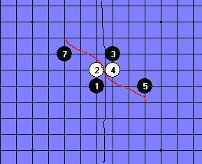
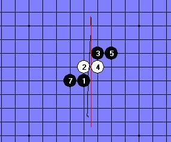
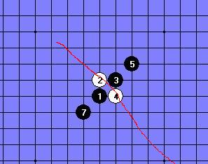
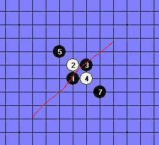
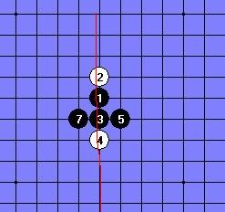
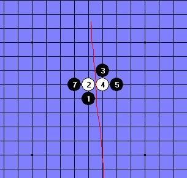

关于风雨同舟 VS 潇洒 6--10次对局暂时锁定 通告！
#1 关于风雨同舟 VS 潇洒 6--10次对局暂时锁定 通告！ 作者：罔两 发表时间：2011-9-11 8:52:09
鉴于风雨同舟 VS 潇洒 第6盘--第10盘中的对局， 棋手风雨同舟都下对称点。
经过查看风雨同舟不了解什么是对称点，鉴于此情况。我暂时锁定第6--第10盘对局！
风雨同舟可自行到论坛查找关于对称点的分辨。待了解清楚了，论坛消息通知我。我帮你们开启对局！
另外，对于风雨同舟对称打点做出警告一次。如果下次继续出现对称打点，将按规则判负！
［ 風雨哃舟 于 2011-9-12 2:20:37 时花20金币送鲜花一朵］
#2 Re:关于风雨同舟 VS 潇洒 6--10次对局暂时锁定 通告！ 作者：掌棋宣传员 发表时间：2011-9-11 8:55:11
我就说花月哪来的那么多打点...#3 Re:关于风雨同舟 VS 潇洒 6--10次对局暂时锁定 通告！ 作者：小元 发表时间：2011-9-11 10:46:12
下山口规则居然不知道对称不允许，还是多看看RIF的规则吧#4 Re:关于风雨同舟 VS 潇洒 6--10次对局暂时锁定 通告！ 作者：心雨其缘 发表时间：2011-9-11 11:08:22
引用：我倒觉得这是一种勇气，五子棋需要一些新鲜血液，都象你这样的高手在这里混对五子棋的推广没有一点好处。不懂没关系，我们在对弈中学习。
原文由 罔两 发表于 2011-9-11 8:52:09 :鉴于风雨同舟 VS 潇洒 第6盘--第10盘中的对局， 棋手风雨同舟都下对称点。
经过查看风雨同舟不了解什么是对称点，鉴于此情况。我暂时锁定第6--第10盘对局！
风雨同舟可自行到论坛查找关于对称点的分辨。待了解清楚了，论坛消息通知我。我帮你们开启对局！
另外，对于风雨同舟对称打点做出警告一次。如果下次继续出现对称打点，将按规则判负！
［ 第五象限 于 2011-9-11 14:11:59 时花20金币送鲜花一朵］
［ 風雨哃舟 于 2011-9-12 2:20:58 时花20金币送鲜花一朵］
#5 Re:关于风雨同舟 VS 潇洒 6--10次对局暂时锁定 通告！ 作者：罔两 发表时间：2011-9-11 12:14:40
楼上的，没有说风雨同舟不好！
只是说希望他能尽快熟悉规则！！
希望不要引导话题偏移~~~~~
［ 第五象限 于 2011-9-11 14:12:13 时花20金币送鲜花一朵］
［ 風雨哃舟 于 2011-9-12 2:20:27 时花20金币送鲜花一朵］
#6 Re:关于风雨同舟 VS 潇洒 6--10次对局暂时锁定 通告！ 作者：心雨其缘 发表时间：2011-9-11 16:08:09
晕我引用错了，我说的是3楼的，谁都是从新人过来的，谁都是从无禁走到有禁的！风月现在是成长阶段望大家多指教，不能打击。
［ 华夏使者 于 2011-9-11 16:12:15 时花20金币送鲜花一朵］
［ 風雨哃舟 于 2011-9-12 2:21:13 时花20金币送鲜花一朵］
#7 Re:关于风雨同舟 VS 潇洒 6--10次对局暂时锁定 通告！ 作者：絕版賭徒 发表时间：2011-9-11 16:27:30
打对称，重新打就是了，，，，我初赛时连山口是什么都不知是什么东东，更别说打点了，，，，，，重打继续吧，这些小问题有什么争执的，也没什么好笑的，新事物新生，总是有过渡期和磨合期，理解，体谅，包容多一点，那个那个少一点~~！与其争执，不如发贴，或加他QQ教他如何不打对称才是硬道理~！
［ 华夏使者 于 2011-9-11 17:03:52 时花20金币送鲜花一朵］





类似以上型状为对称,当然还有很多
］
［此帖子已被 絕版賭徒 在 2011-9-11 17:47:17 编辑过］
［ 掌棋如烟 于 2011-9-11 20:48:58 时花20金币送鲜花一朵］
［ 風雨哃舟 于 2011-9-12 2:21:37 时花20金币送鲜花一朵］
#8 Re:关于风雨同舟 VS 潇洒 6--10次对局暂时锁定 通告！ 作者：虎哥 发表时间：2011-9-11 17:54:34
分轴对称和中心对称。简单讲就是只要棋形一样，不论盘端相同与否，都算对称打点。［ 华夏使者 于 2011-9-11 18:53:45 时花20金币送鲜花一朵］
［ 風雨哃舟 于 2011-9-12 2:20:01 时花20金币送鲜花一朵］
#9 Re:关于风雨同舟 VS 潇洒 6--10次对局暂时锁定 通告！ 作者：風雨哃舟 发表时间：2011-9-11 19:17:34
我全认输 ~~行了吧
［ 踵酃 于 2011-9-11 20:05:43 时花50金币砸了你一个臭鸡蛋］
#10 Re:关于风雨同舟 VS 潇洒 6--10次对局暂时锁定 通告！ 作者：踵酃 发表时间：2011-9-11 20:12:49
别以为那么简单就能逃脱，根据规定楼主要被扣罚4个威望。［ 風雨哃舟 于 2011-9-12 2:18:40 时花250金币拍了你一板砖］
［ 風雨哃舟 于 2011-9-12 2:18:58 时花50金币砸了你一个臭鸡蛋］
#11 Re:关于风雨同舟 VS 潇洒 6--10次对局暂时锁定 通告！ 作者：罔两 发表时间：2011-9-11 20:26:47
风雨同舟：
首先这个帖子，没有任何对你不熟悉规则的歧视，我已经说的很清楚了，暂时锁帖。你熟悉完规则后再恢复你们继续比赛。毕竟这是比赛，所以我提出一次警告。希望你也理解。并没有任何其他意思，只是根据比赛规则来进行的一个正常通告。
另外这只是个简单的比赛通告，没有任何其他意思成分，因此我希望其他回复的玩家，不要把其他有误导性的话题带入。至于他不会对称打点参与了比赛，新人出现的小插曲，应该给予理解。但是熟悉规则是风雨同舟你必须完成的功课。
因此也希望你不要有过激的行为。对其他玩家的意思也不要过多的去误解。再一次声明，锁帖是暂时中断比赛，让你有熟悉规则的时间，目的在此。希望你能理解！
［ 掌棋如烟 于 2011-9-11 20:50:14 时花20金币送鲜花一朵］
［ 雅匪 于 2011-9-12 11:10:18 时花20金币送鲜花一朵］
#12 Re:关于风雨同舟 VS 潇洒 6--10次对局暂时锁定 通告！ 作者：潇洒 发表时间：2011-9-12 14:09:06
风雨同舟同学请参看7楼赌徒老师的图学习关于打点对称的形状和本质（分中心对称和轴对称）
请以后在山口对局请不要给出对称的打点。对称的打点等于重复的，只能算是一个打点而已。
明白了，就跟帖说明下。然后重新对局。。
#13 Re:关于风雨同舟 VS 潇洒 6--10次对局暂时锁定 通告！ 作者：踵酃 发表时间：2011-9-15 0:55:39
 你们说风雨同舟需要多久才能明白什么是对称点呢?
你们说风雨同舟需要多久才能明白什么是对称点呢?
我赌1金币: It takes forever.
#14 Re:关于风雨同舟 VS 潇洒 6--10次对局暂时锁定 通告！ 作者：九张机 发表时间：2012-12-1 12:01:46
恩，挺好，下得不错，以后要多举办些这个